Цветные скалы Чжанъе Данксиа, Китай
 Уникальные цветные скалы Чжанъе Данксиа находятся в Китае, в провинции Ганьсу. Цветные скалы состоят из красных песчаников и конгломератов в основном мелового периода. Такие образования являются уникальным типом петрографической геоморфологии, существующие только здесь. Цветные скалы включены в Список Всемирного наследия.
Уникальные цветные скалы Чжанъе Данксиа находятся в Китае, в провинции Ганьсу. Цветные скалы состоят из красных песчаников и конгломератов в основном мелового периода. Такие образования являются уникальным типом петрографической геоморфологии, существующие только здесь. Цветные скалы включены в Список Всемирного наследия.
Качели "Конец света", Эквадор
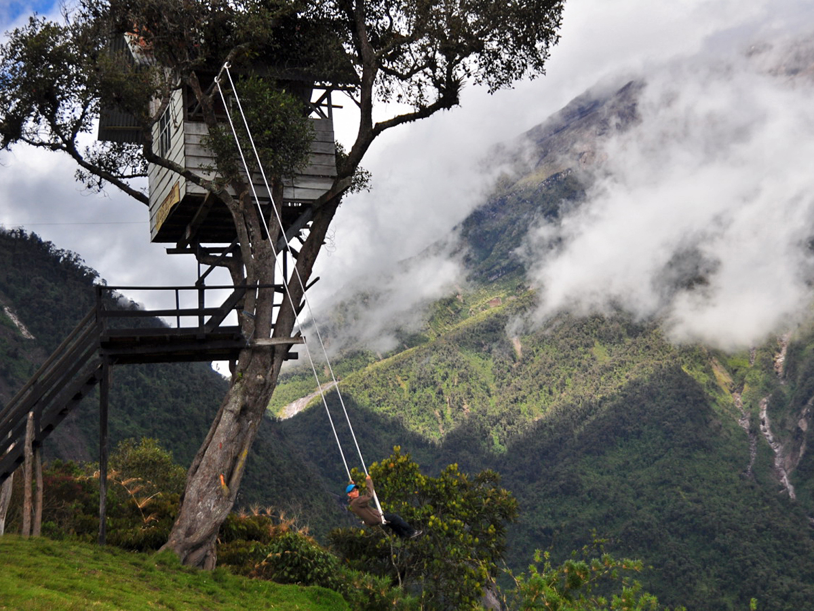
Этот экстремальный аттракцион находится в горах Эквадора (город Баньос). Уникальные качели над пропастью находятся на высоте 2660 метров над уровнем моря, откуда открывается захватывающий вид на Анды.
Большая Голубая Дыра, Белиз
 Еще одно удивительное место планеты – Большая голубая дыра, расположенная в центре Лайтхаус-Рифа, вблизи полуострова Юкатан (территория государства Белиз в Центральной Америке). Дыра, которая стала известна благодаря французскому исследователю Жак-Иву Кусто, представляет собой круглую воронку диаметром 305 м и 120 м в глубину. Сегодня это одно из лучших мест для дайвинга в мире.
Еще одно удивительное место планеты – Большая голубая дыра, расположенная в центре Лайтхаус-Рифа, вблизи полуострова Юкатан (территория государства Белиз в Центральной Америке). Дыра, которая стала известна благодаря французскому исследователю Жак-Иву Кусто, представляет собой круглую воронку диаметром 305 м и 120 м в глубину. Сегодня это одно из лучших мест для дайвинга в мире.
Тюльпанные поля в Голландии
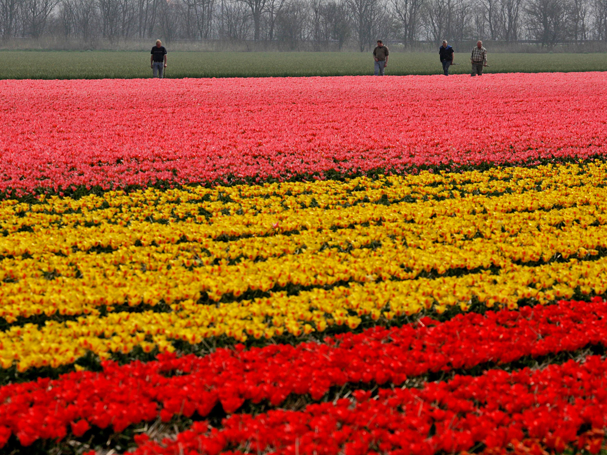
Настоящий сезон тюльпанов в Нидерландах начинается во второй половине апреля и длится примерно до десятых чисел мая.
Самые многочисленные поля с тюльпанами расположены по берегу Северного моря за полоской дюн, также по дороге в города Лейден, Гаагу и Делфт, и рядом с городом Энкхейзен. Недалеко от Амстердама тюльпанные поля можно увидеть в осушенном когда-то озере, а теперь плодороднейшей земле Беймстер, которая находится под охраной общества ЮНЕСКО.
Пещера горной реки, Вьетнам
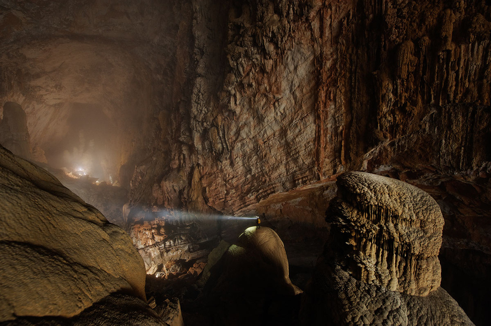
Пещера горной реки (Son Doong), протяженностью почти 6 км, является крупнейшей в мире. Самая большая ее часть достигает 200 метров в высоту и 150 метров в ширину, а некоторые части пространства настолько массивные, что в них может уместиться город со всеми его улицами. От постоянного размывания рухнула часть пещеры, образовав проходы и так называемые залы пещеры.
Национальный парк Хитачи, Япония
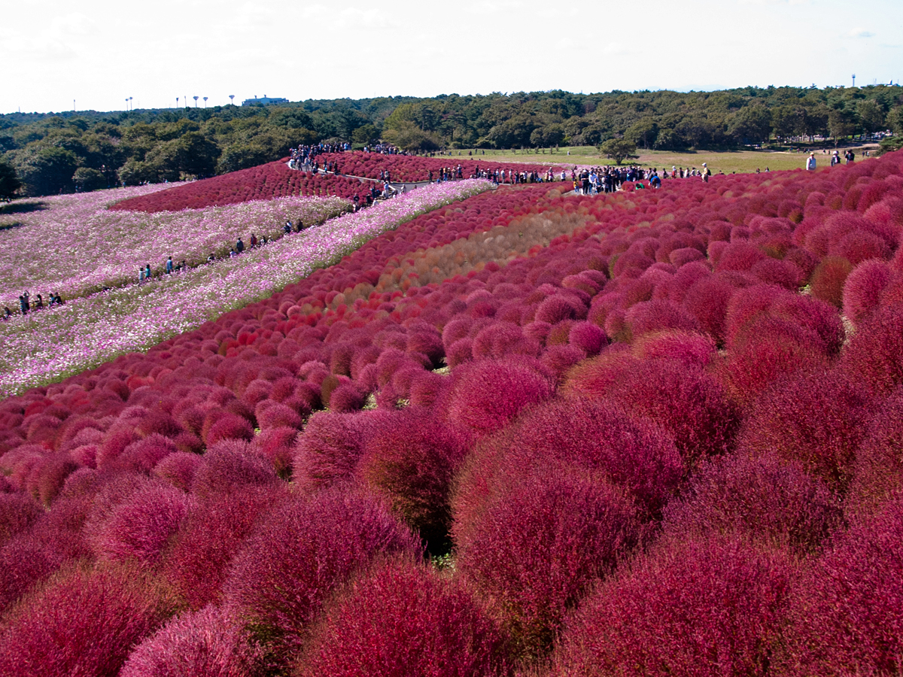
Парк Хитачи расположен в японском городе Хитатинака (префектура Ибараки). Парк был основан в 1991 году на месте бывшей американской военной базы и на данный момент занимает 120 га. В определенный сезон в парке расцветает определенный вид цветов – тюльпаны, маки, нарциссы, лилии, сакура. Плантации расположились на склоне Михараши, откуда открывается живописный вид на побережье Тихого океана.
Ледяная пещера под ледником в Джуно, США
 Пещера в 12-километровом леднике Менденхолл расположена близ города Джуно на Аляске. Она уникальна тем, что ежегодно меняет свой облик - лед в пещере тает, создавая родники.
Пещера в 12-километровом леднике Менденхолл расположена близ города Джуно на Аляске. Она уникальна тем, что ежегодно меняет свой облик - лед в пещере тает, создавая родники.
Гора Рорайма на стыке Венесуэлы, Гайаны и Бразилии
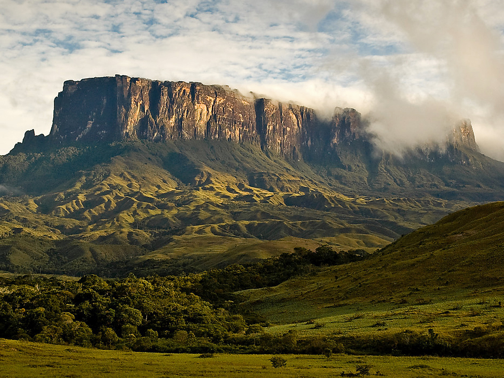
Уникальная гора Рорайма находится на севере Южной Америки, на стыке Бразилии, Венесуэлы и Гайаны. Высшая точка горы – 2723 м над уровнем моря, а плоская вершина представляет собой плато площадью около 34 км². Она считается священным местом, а местные индейцы называют ее пупом земли. С горы открывается фантастический вид: именно Рорайма и вдохновила Артура Конан Дойля на написание романа Затерянный мир.
Древний регион Каппадокия, Турция
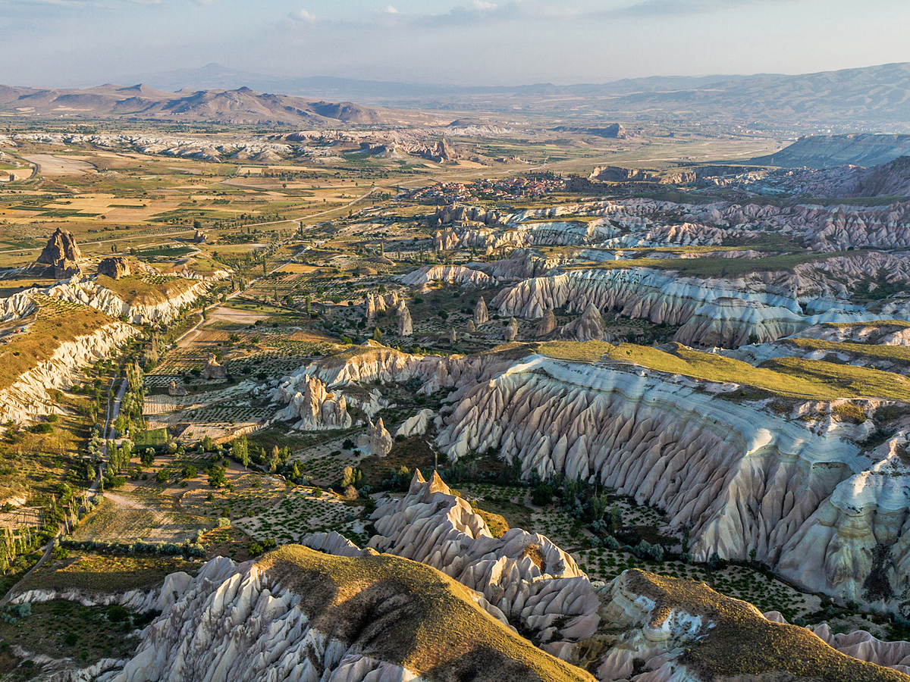
Каппадокия является одним из туристических центров Турции с уникальными вулканическими ландшафтами, каньонами, пещерными и подземными городами. История Каппадокии ведет свое начало с 5 тыс. до н. э. Все это время регион находился на перекрестке цивилизаций, входя поочередно в состав Хеттской, Персидской, Римской и Османской империй.
Море Звезд на острове Ваадху, Мальдивы
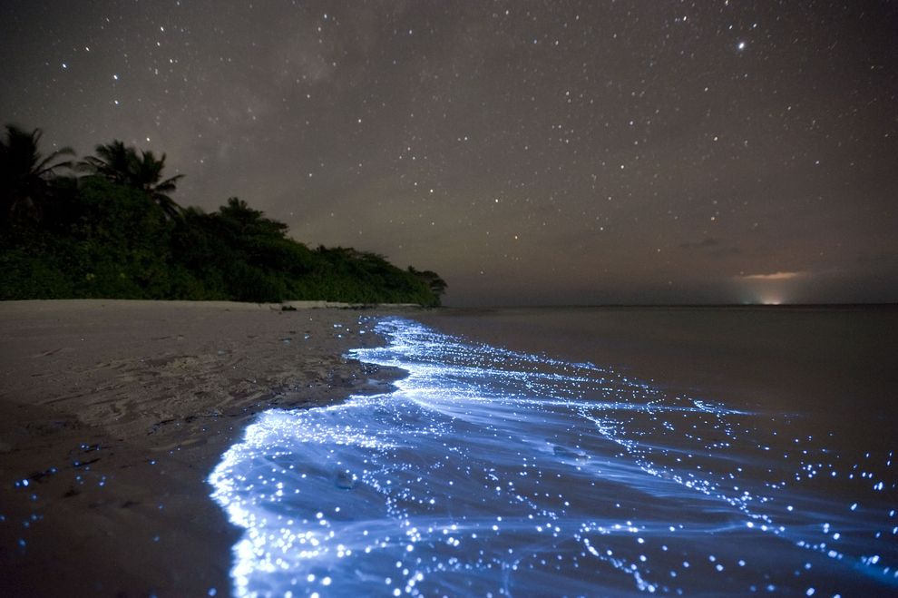
Уникальные светящиеся волны на Мальдивах объясняются биолюминесценцией – химическими процессами в организме животных, при которых освобождающаяся энергия выделяется в форме света. Кажется, что в море Sea of Stars отражаются звезды с неба.
Водопад Виктория на стыке Зимбабве и Замбии
 Водопад Виктория — единственный водопад в мире, имеющий более 100 метров в высоту и более километра в ширину. Туристы могут ходить по самому краю водопада в Бассейне Дьявола, который расположен со стороны Замбии. Водопад является одной из главных достопримечательностей Южной Африки, относится к Всемирному наследию ЮНЕСКО.
Водопад Виктория — единственный водопад в мире, имеющий более 100 метров в высоту и более километра в ширину. Туристы могут ходить по самому краю водопада в Бассейне Дьявола, который расположен со стороны Замбии. Водопад является одной из главных достопримечательностей Южной Африки, относится к Всемирному наследию ЮНЕСКО.
Язык Тролля, Норвегия
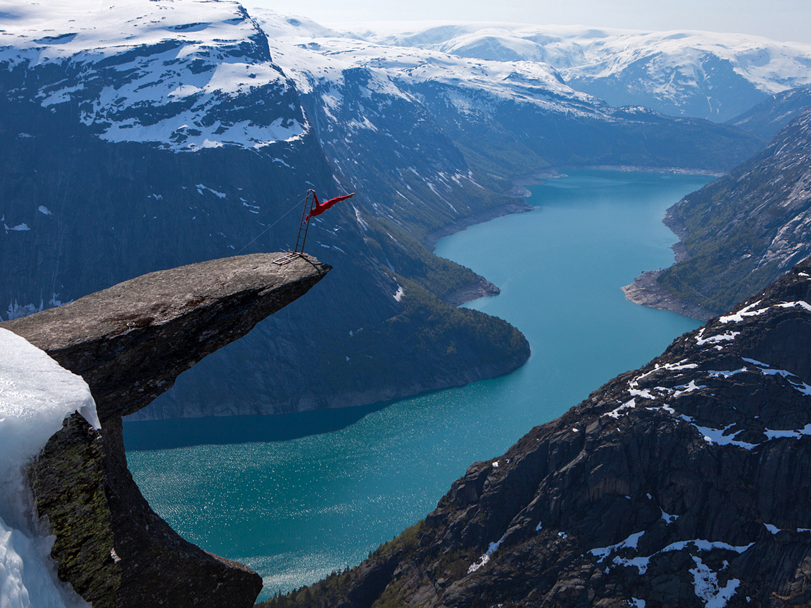
Язык Тролля – каменный выступ на горе Скьеггедаль, вблизи города Одда в Норвегии. Выступ возвышается над озером Рингедалсватн на высоте 350 метров. Это место паломничества туристов, хотя, чтобы туда взобраться, понадобятся не менее 5 часов.
Пляжи Белой гавани, Австралия
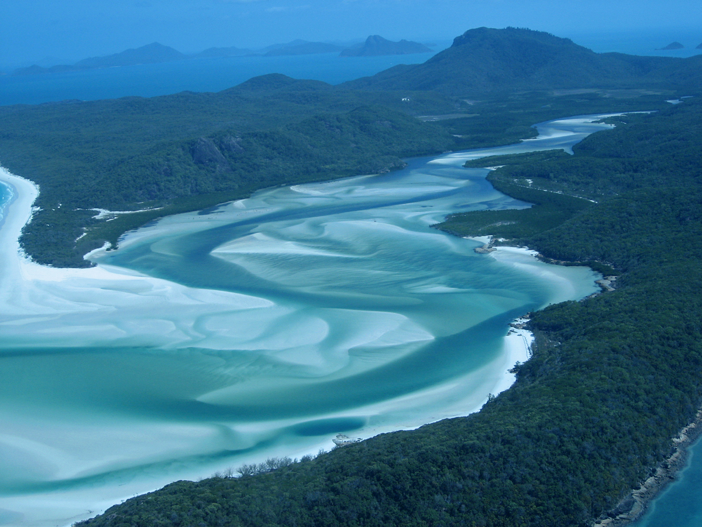
Пляжи Белой гавани в архипелаге Святой Троицы знамениты своим мелким белоснежным песком. Он, по предположениям, выносился морем на сушу в течение миллионов лет.
Большой Каньон, США
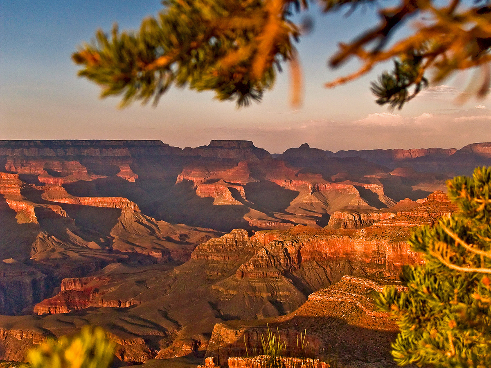
Гранд-Каньон назван одним из Семи чудес природы, а также включен в список Всемирного наследия ЮНЕСКО. Находится на плато Колорадо (штат Аризона, США), на территории национального парка Гранд-Каньон, а также резервациях индейцев племен навахо, хавасупай и хуалапай.
Мраморные пещеры в Патагонии, на стыке Аргентины и Чили
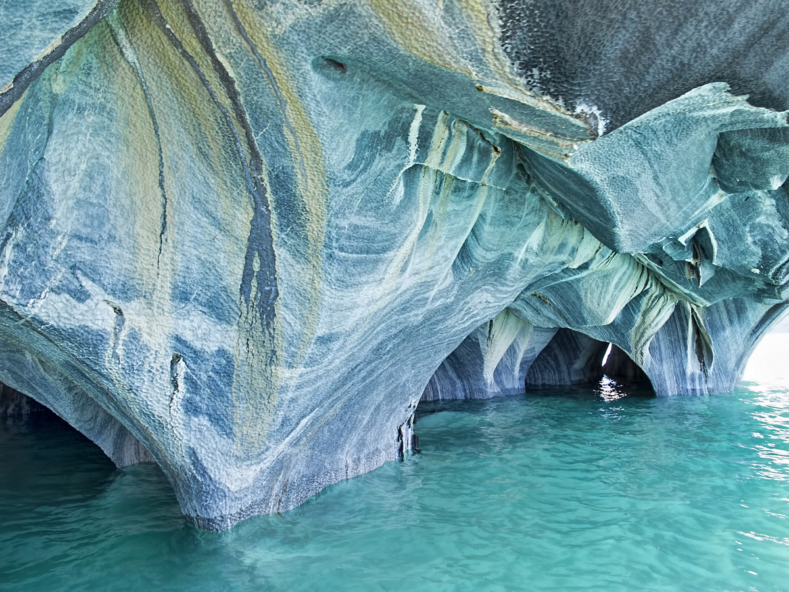
Мраморные пещеры или Мраморный собор, которые были сформированы морскими волнами около шести тысяч лет назад, находятся в центре озера Буэнос-Айрес.
Тоннель любви, Украина
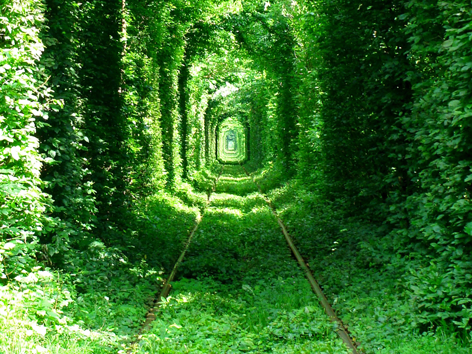
Прекрасное место для влюбленных, являющее собой сплетение веток деревьев и кустов в виде тоннеля в поселке Клевань Ровненской области.
Солончак Уюни, Боливия
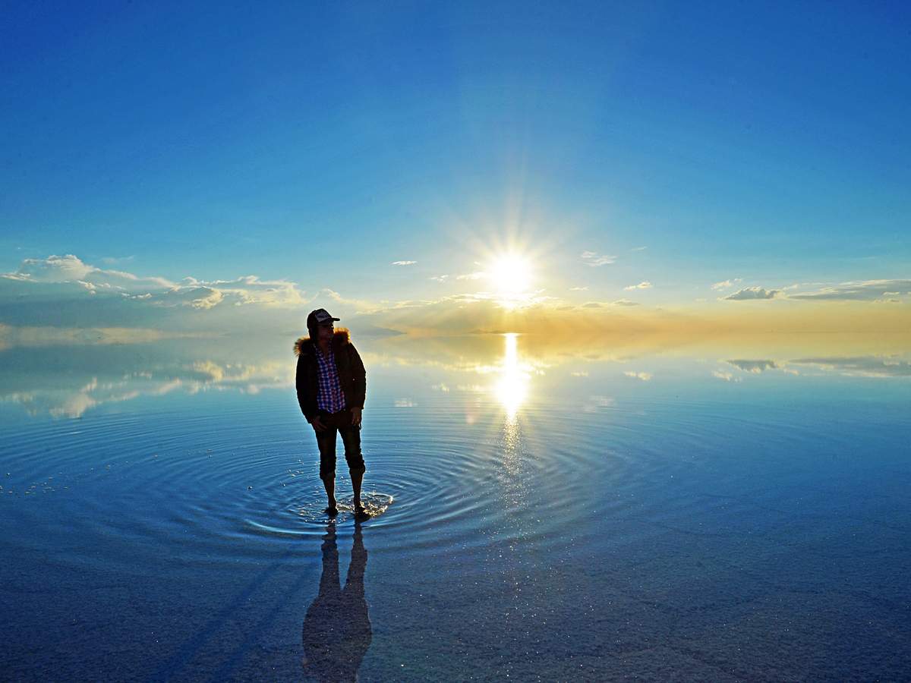
Высохшее соленое озеро Уюни на юге пустынной равнины Альтиплано в Боливии расположено на высоте около 3650 метров над уровнем моря. При обилии дождей превращается в огромное зеркало, что дает возможность калибровать спутники. Здесь находится и кладбище паровозов, которые лежат там уже более 60 лет.
Заколдованный колодец, Бразилия
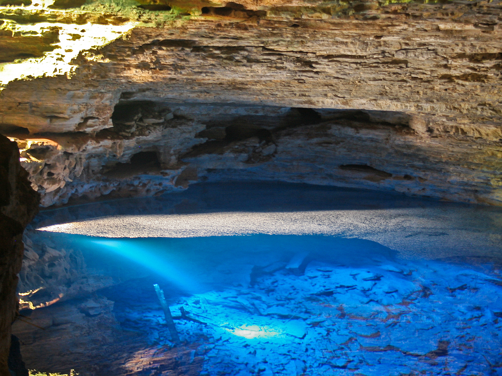
В пещерах Национального парка Шапада-Диамантина в Баия есть поистине уникальный колодец Enchanted Well. При глубине до 36 метров, можно увидеть камешки на его дне. А когда лучи солнца падают в колодец под определенным углом, вода окрашивается в насыщенно синий цвет. По советам туристов, лучшее время, для наблюдения за этим явлением - полдень в июне и июле, где-то между 11 и 12 часами.
Каньон Антилопы, США
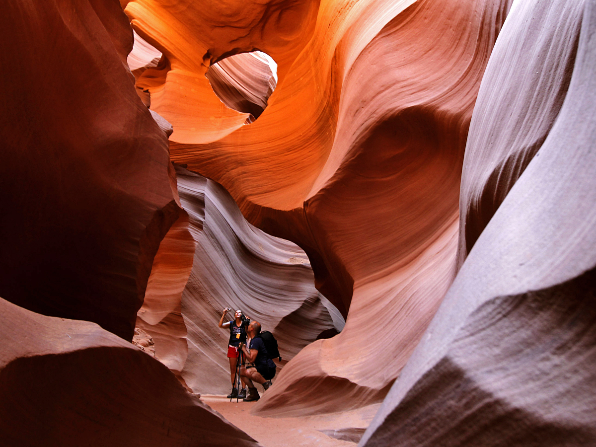
Каньон Антилопы, расположенный в горах Пэйдж, получил свое название, благодаря рыже-красным стенам, напоминающим шкуру антилопы. В течение нескольких столетий вода и ветер вытачивали и формировали изящные и причудливые рельефные линии внутри скал.
Фингалова пещера, Шотландия
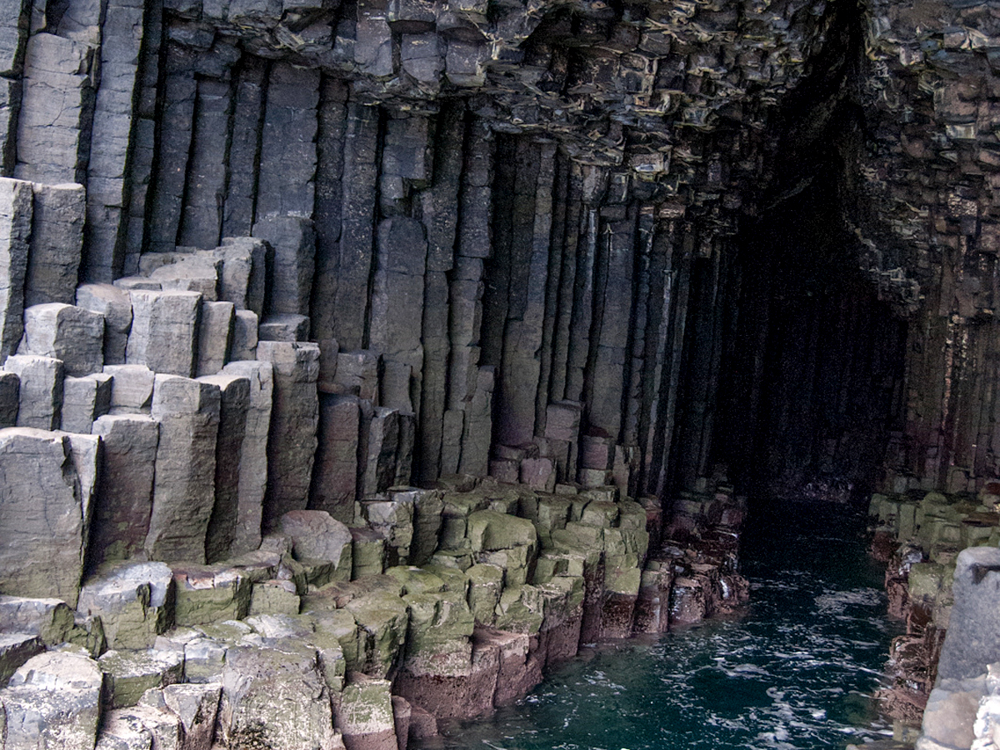
Фингалова пещера — одно из самых необычайных мест, созданных природой. Хотя может показаться, что эти структуры созданы человеком, на самом деле пещеры формировались в течение палеоцена из потоков лавы. На гэльском языке пещера называется Uamh-Binn - пещера мелодий. Причудливо преображенные звуки прибоя отдаются по всей внутренности пещеры, что делает ее похожей на огромный собор со звучащим в нем органом.